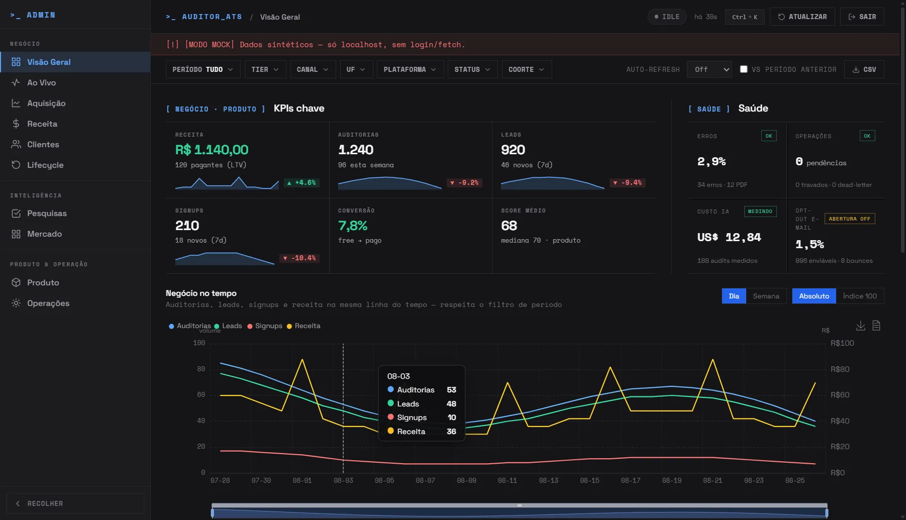
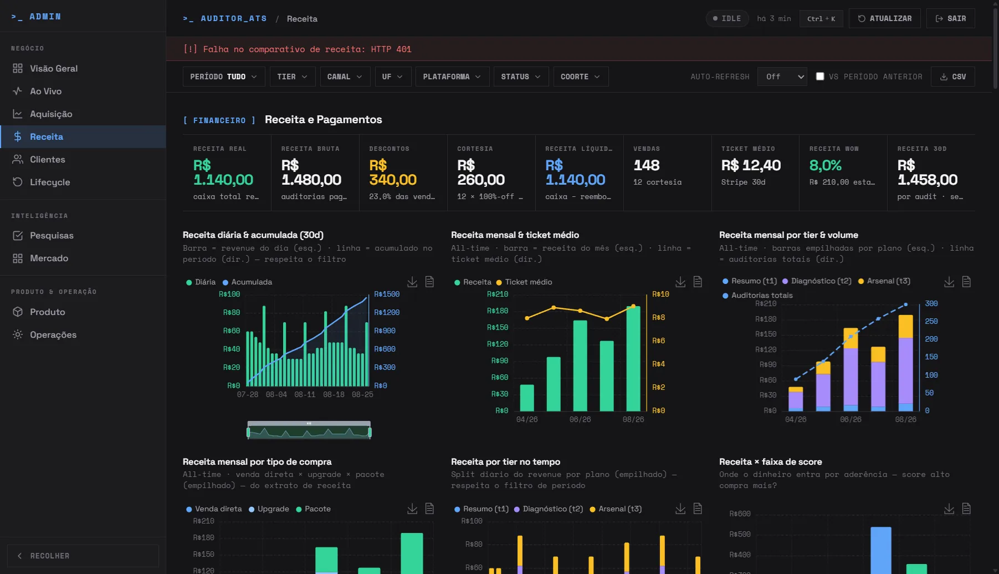
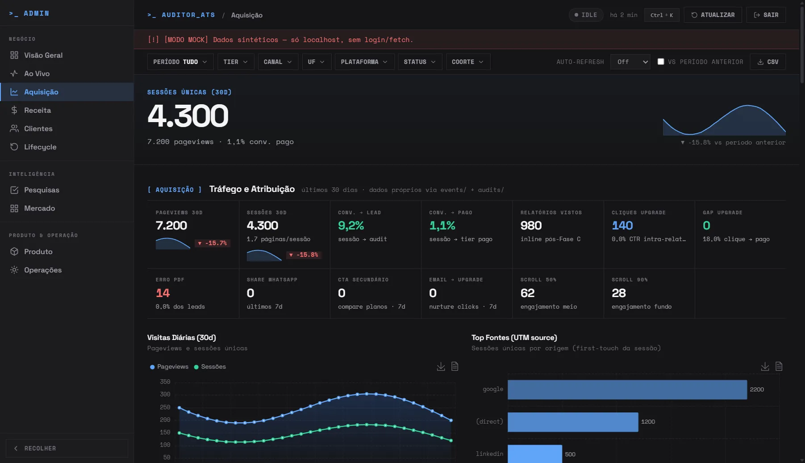
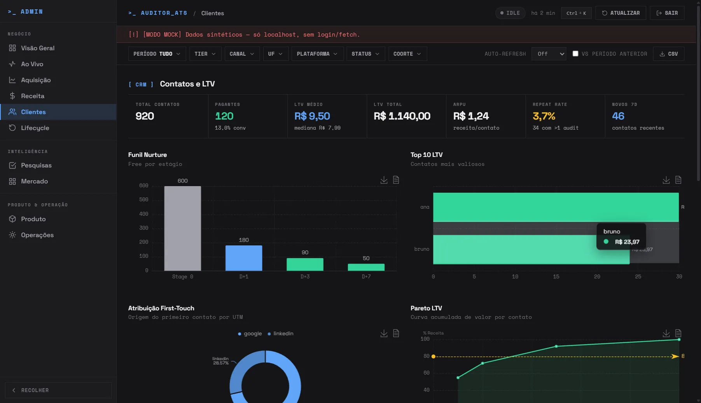
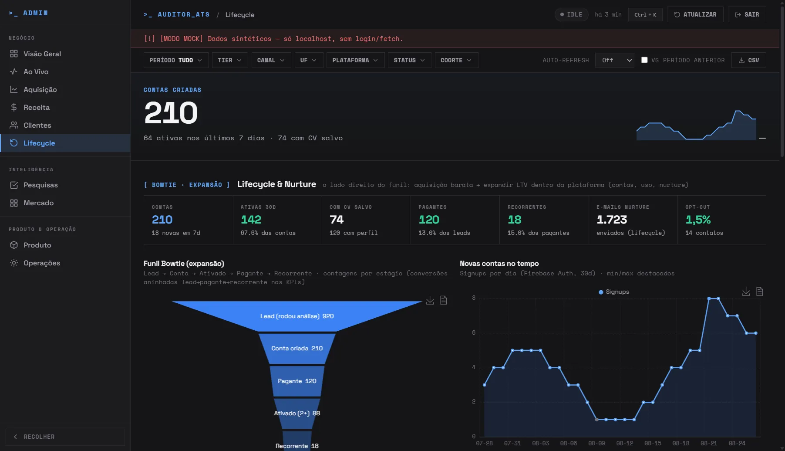
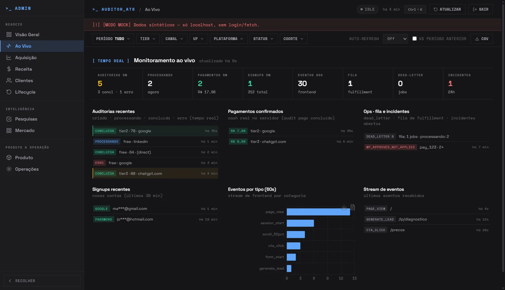
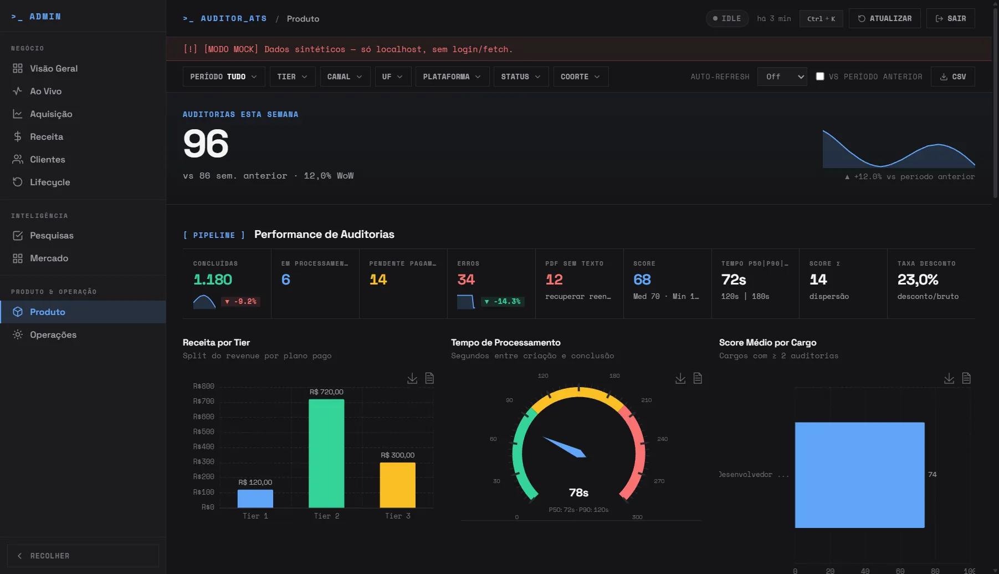
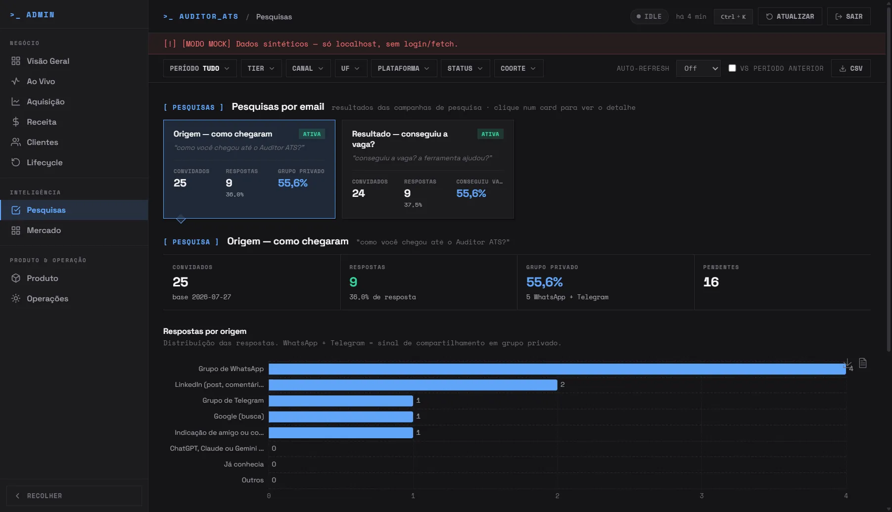
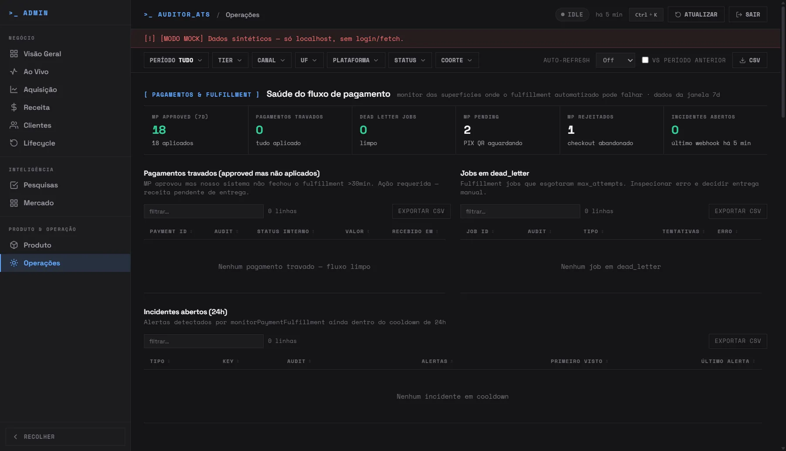
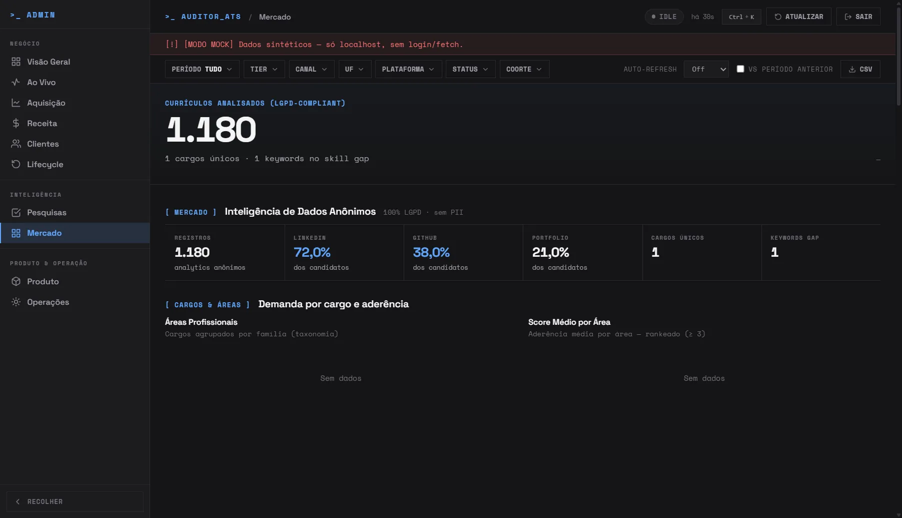

Business + product KPIs, a health rail, and a combined time series (audits, leads, signups, revenue) with day/week and absolute/indexed toggles.

Revenue & payments: gross/net, coupons, revenue per tier over time, Stripe/Mercado Pago reconciliation, AI cost per run, and a monthly P&L.

Traffic & attribution: daily sessions, top UTM sources, conversion funnel, channel×tier matrix, AI-crawler visits, and CAC by channel.

CRM & LTV: nurture funnel, top contacts by LTV, first-touch attribution, weekly cohorts, and a per-contact activity table.

Bowtie funnel (lead → account → activated → paying → recurring) and email observability: cadences, deliverability, list health.

Real-time feeds: recent audits, confirmed payments, ops queue & incidents, signups, and a 60-second event stream.

Pipeline & cross-analysis: revenue by tier, processing time, score by role, score×time scatter, and score-by-tier boxplots.

Email surveys: how customers arrived (origin) and what happened next (outcome: did they get the job? did we help?).

Payments/fulfillment health, error types, audit status, a grant-credits tool, and an operations action center (dry-run first).

Anonymous (LGPD) market intelligence over analyzed resumes: professional areas, skill gaps, seniority, geography, demand. Charts are blank in mock, this view is fed by the real anonymized base.